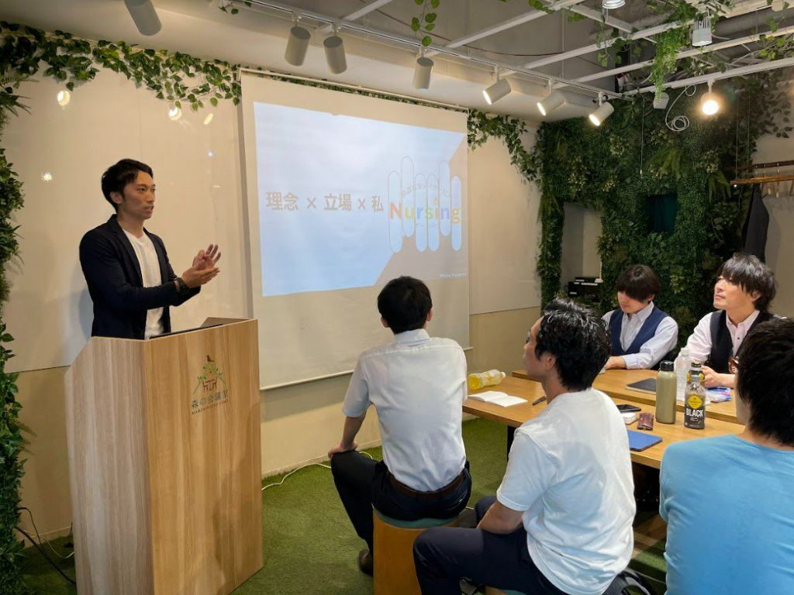
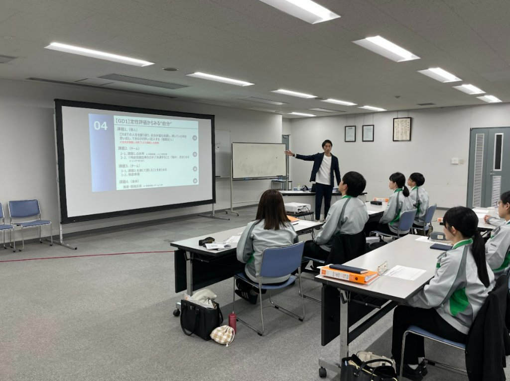
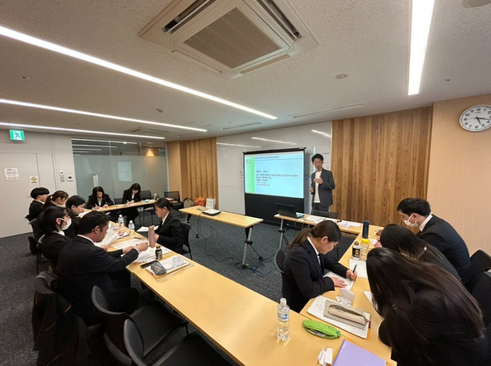
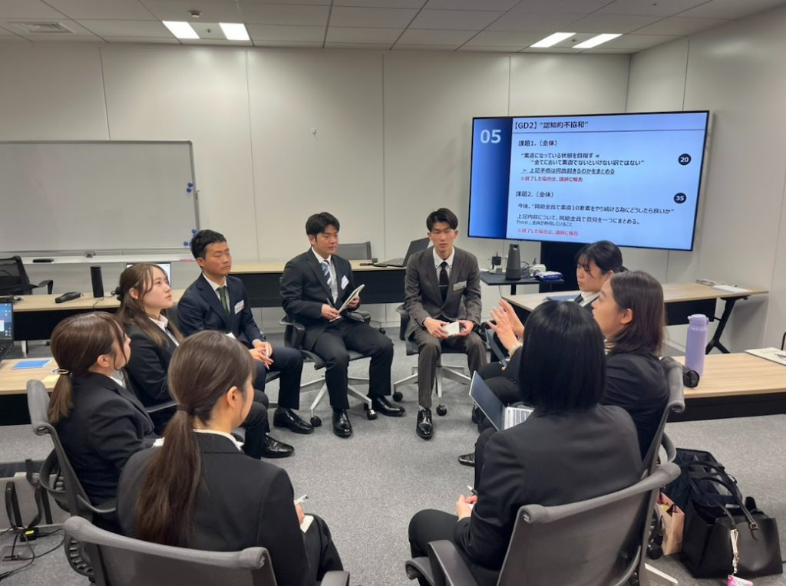

「課題 → 支援 → 成果」の3段構成でご紹介します。数値実績は今後の蓄積とともに順次公開してまいります。

現場だけでは気づけない課題や、面接官ごとの評価のばらつきが課題でした。
研修と面接官トレーニングを通じ、社内では出てこない本音の声を可視化しました。
見過ごしていた部分を具体的に指摘してもらえたことで、安心して導入を決められ、実際に業務の質の向上を実感。

管理職・メンバーそれぞれが、自分自身の考え方や在り方を見つめ直す機会が不足していました。
心理学的アプローチを取り入れた研修を実施し、無意識の判断や『自分のクセ』への気づきを促しました。
チームメンバーへの接し方や受け止め方に変化が生まれ、組織内コミュニケーションが改善しました。

研修が座学中心になりがちで、チームの一体感やお互いの価値観の共有が課題でした。
超参加型の体験学習型研修を設計し、メンバー同士が想いを共有できる場をつくりました。
お互いの想いや価値観を共有する中で、チームの一体感が確実に高まったとの声をいただきました。

知識のインプット型研修では、現場での行動変容につながりにくいという課題がありました。
講師自身の実体験を交えた研修プログラムを提供し、姿勢や生き方から学べる機会を設計しました。
一つひとつの言葉に説得力があり、日々の充実度が伝わる研修として高い評価をいただきました。
※ 掲載している事例は各社様の許諾を得て公開しています。採用コンサルティング・人事制度構築の数値実績は、今後の支援実績の蓄積とともに順次公開してまいります。
業種・規模を問わず、無料相談を承っております。